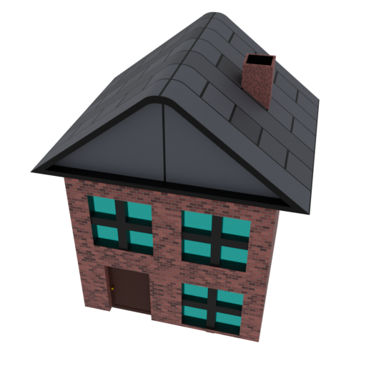
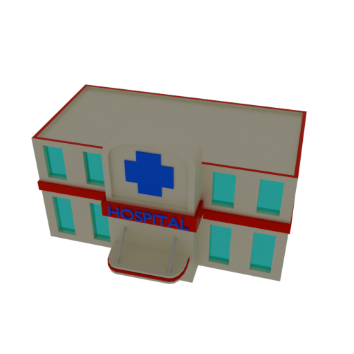
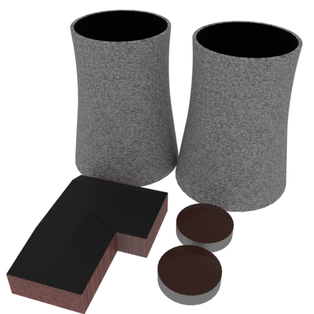
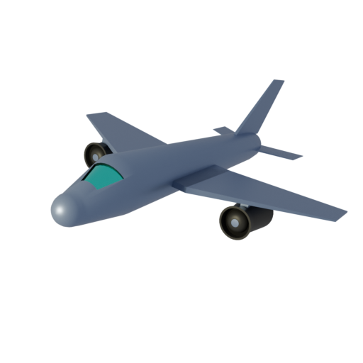

Select a location.
Select a location.
Welcome to the Nuclear Medicine Logistics Explorer. Explore how patients and medical radioisotopes move through the nuclear medicine supply chain.
Select a patient from the panel on the left, then select a hospital on the map to calculate the patient's journey.
Select an isotope production facility and a hospital to view the route used to transport the isotope to the hospital.

Patient Location
Hospital
Isotope Production Facility
Air TravelThe information presented in this game is for educational purposes only and does not fully accurately represent the real-world nuclear medicine supply chain. Liberty has been taken when deciding the isotopes produced at each facility to make the game more engaging and to highlight the isotopes used in nuclear medicine, although important facts (such as the UK's lack of domestic production) is accuratley represented. In reality, the nuclear medicine supply chain is more complex and involves many more facilities, isotopes, and transportation routes than are represented in this game. Additioanlly, Isotopes are not directly shipped between production facilities and hospitals, but rather are sent to distribution centers before being sent to hospitals.